(D’une lecture en classe à un parcours dans un musée, d’un cycle littéraire à une lecture en pleine nature.)
Lectures
Un texte, une voix, un temps pour écouter. Les formes changent selon les textes, les lieux et les projets.


(Choisissez une forme. Les cartes se rangent.)
Le répertoire
Les 13 lectures du répertoire.
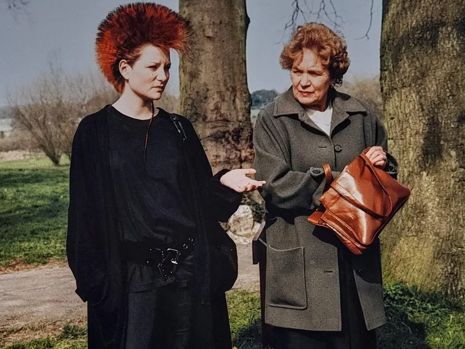
Histoires d’Ados
Une découverte de la littérature adolescente contemporaine.
Prochaine date : 24 nov., Lucé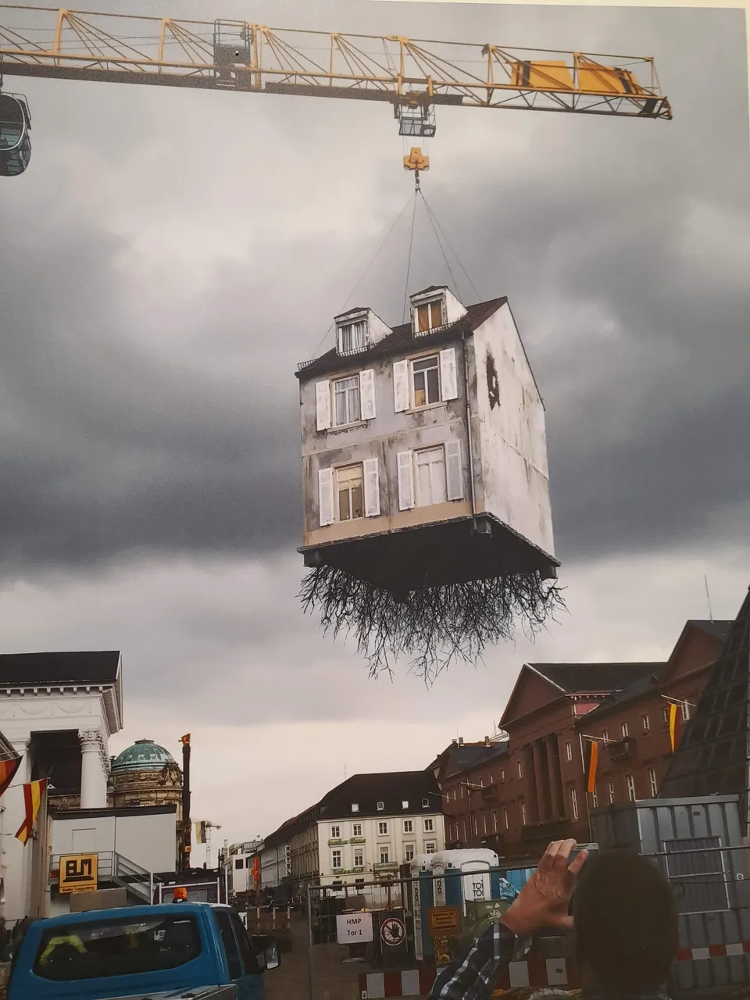
Habiter le monde
Ce qui nous entoure, ce qui nous traverse.
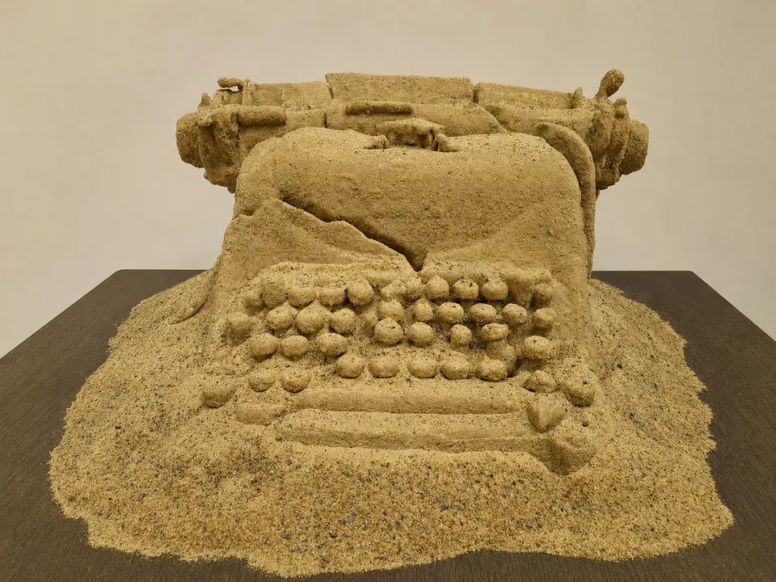
Écrire, une aventure à soi
L’écriture par celles et ceux qui écrivent.

Paysans Paysages
Le monde rural par Balzac, Sand et Zola.
George Sand, la femme aux mille visages
Une œuvre à découvrir sous plusieurs angles.
Au bord de l’eau
Aventures végétales et récits d’aventures.
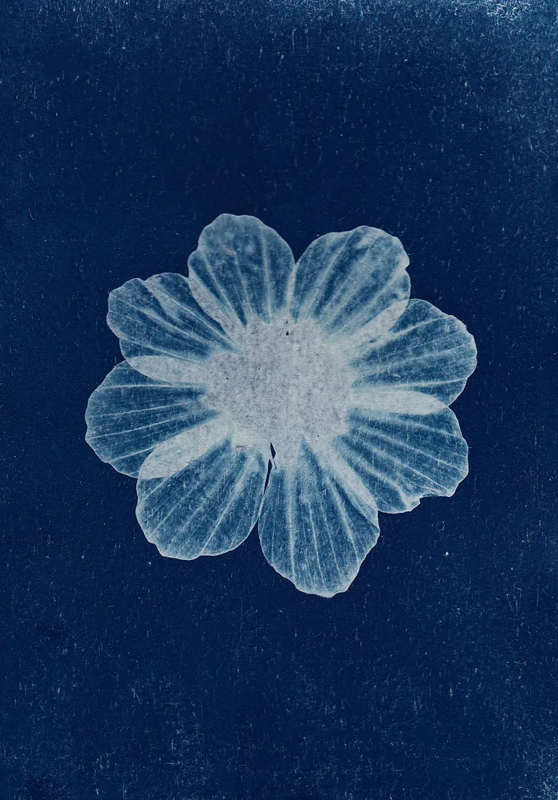
Observer le vivant
Cyanotype et littérature.

L’Atelier Paysans Paysages
Cueillir, composer, écouter.
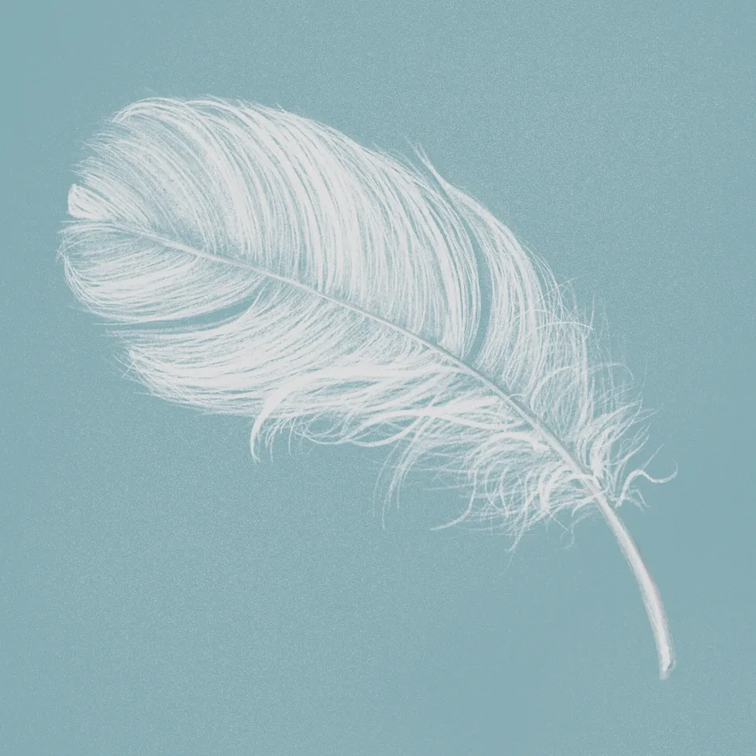
Les Toutes Petites Lectures
En cours de création.
Au supermarché
Lire Annie Ernaux au rayon lessive…
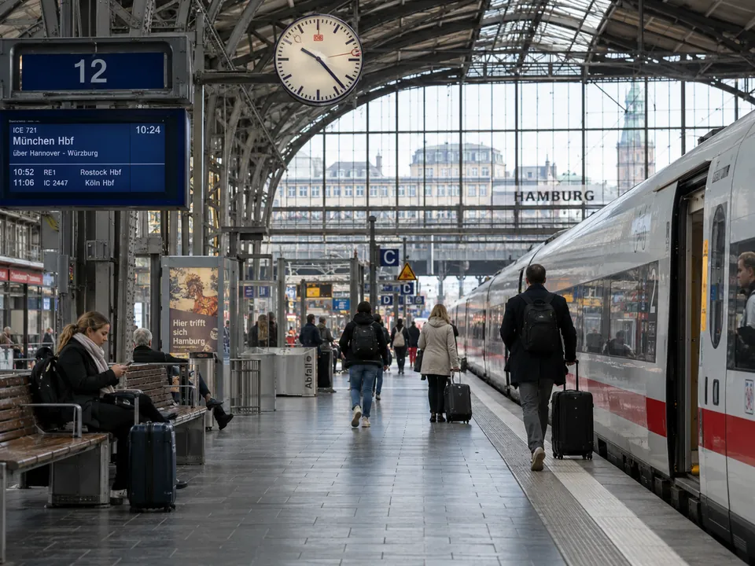
Dans une gare
Écouter le voyage…
Au musée
Faire dialoguer texte et œuvre…
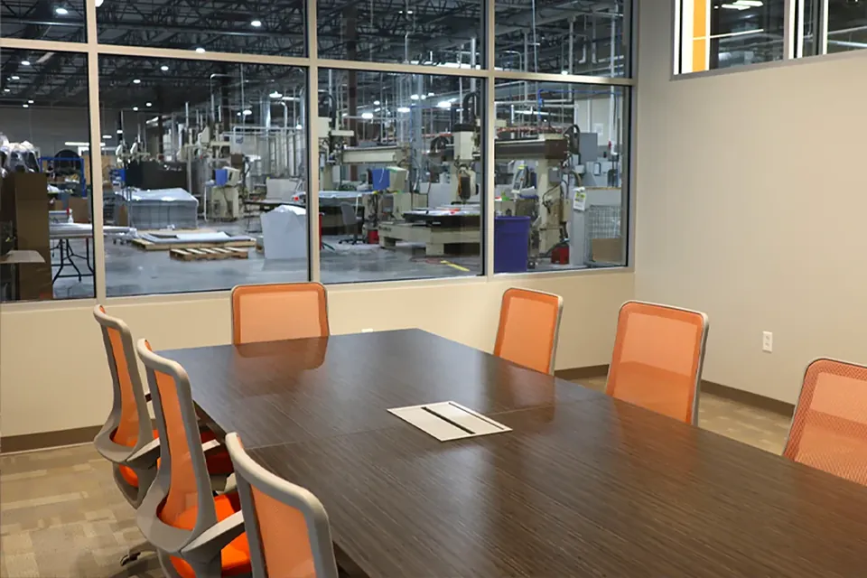
En entreprise
Faire une place à l’imaginaire dans le monde du travail.
(Trois manières de faire.)
En tournée, en immersion, sur mesure
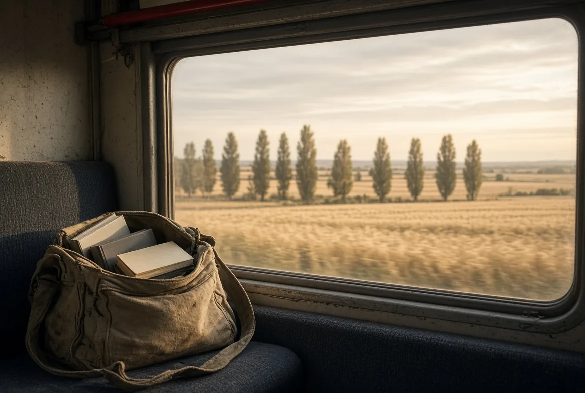
En tournée
Des lectures et des cycles littéraires prêts à être programmés.
Voir ces lectures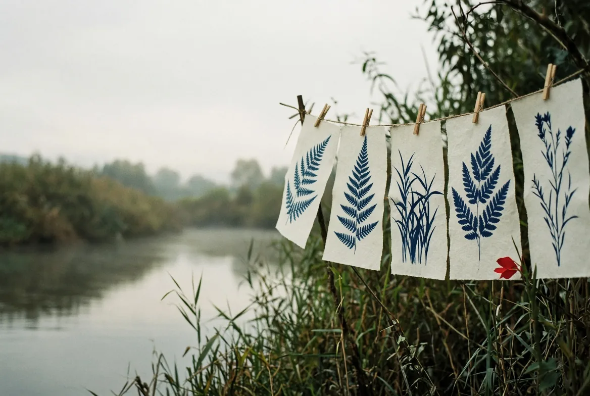
En immersion
Une expérience avant ou pendant la lecture pour enrichir l’écoute.
Voir ces lectures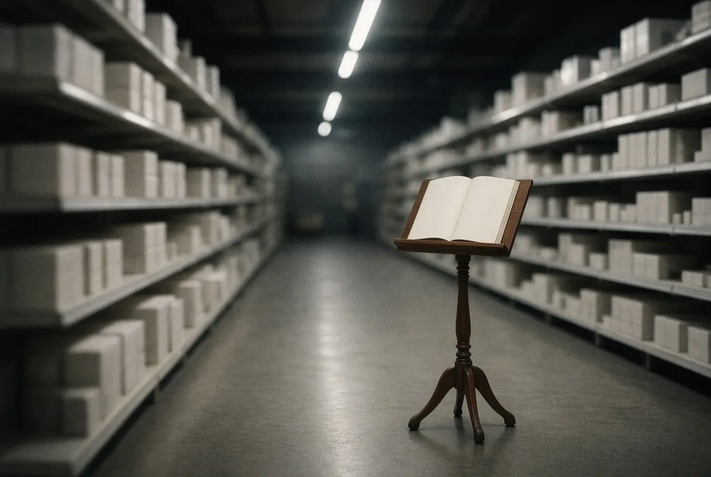
Sur mesure
Des lectures conçues autour d’un thème, d’un lieu ou d’un projet.
Voir ces lecturesÀ vous
Programmer une lecture
Médiathèque, établissement scolaire, musée, festival, lieu de soin ou entreprise : décrivez votre projet en quatre étapes pour préparer une proposition avec la compagnie.
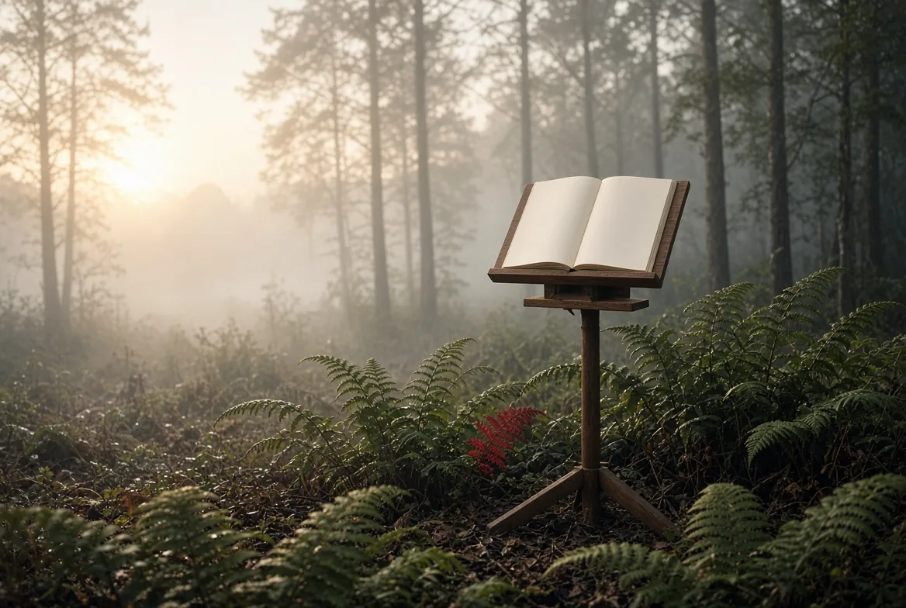